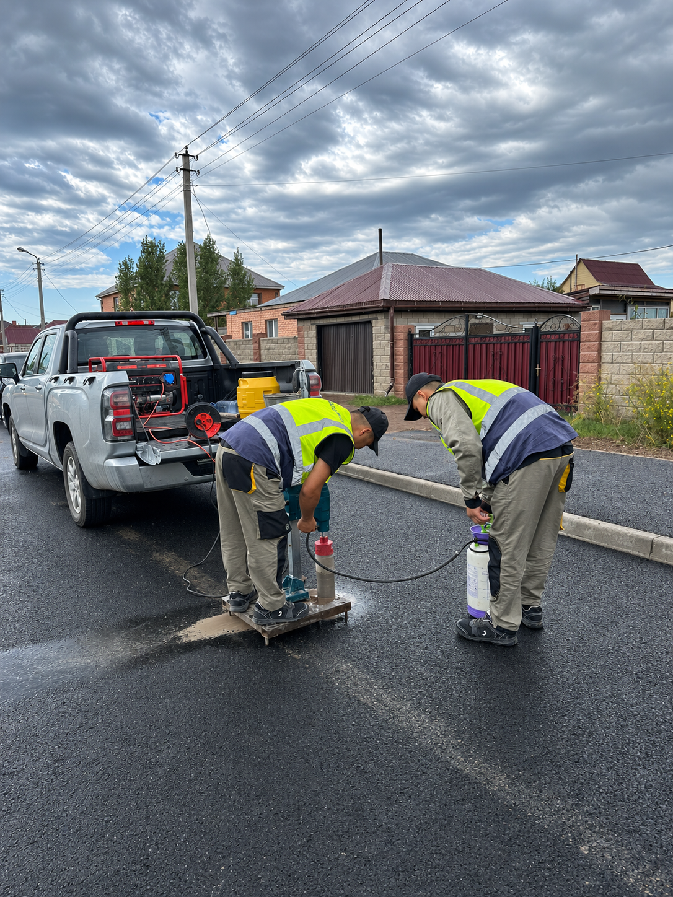
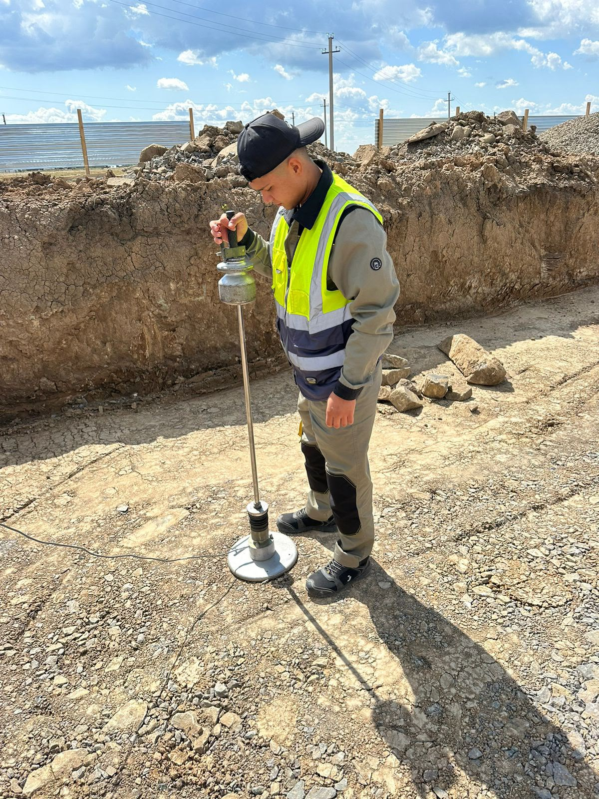

ИСПЫТАТЕЛЬНАЯ ЛАБОРАТОРИЯ · АСТАНА
КАЧЕСТВО ДОРОГ
НАЧИНАЕТСЯ С КОНТРОЛЯ.
Лабораторное сопровождение и контроль качества строительства автомобильных дорог — от материалов до готового покрытия.

В лаборатории.
На вашем объекте.
НАДЕЖНОСТЬ, ПОДТВЕРЖДЕННАЯ ИСПЫТАНИЯМИ
Прочная основа
вашего проекта
ТОО «КЗ Сапа Зертханасы» — развивающаяся организация на дорожно-строительном рынке Казахстана. Помогаем обеспечивать надежность и долговечность дорог через строгий контроль качества.
Ошибки в выборе материалов и нарушение технологии сокращают срок службы дорог и повышают затраты на обслуживание. Лабораторный контроль помогает выявлять несоответствия своевременно.
КОМПЛЕКСНОЕ СОПРОВОЖДЕНИЕ
Качество под контролем.
На всех этапах.
Выстраиваем контроль под требования проекта: от проверки материалов до официального протокола испытаний.

Контроль начинается с основания
ПОЧЕМУ НАМ ДОВЕРЯЮТ
Компетентность в деталях.
Уверенность в результате.

МОБИЛЬНАЯ ЛАБОРАТОРИЯ
Там, где строится
качество
Работаем непосредственно на объектах: проводим контроль технологических процессов, отбор образцов и испытания. Объем работ и методы согласуем с учетом задач проекта и области аккредитации.
Написать намОФИЦИАЛЬНО ПОДТВЕРЖДЕНО
Точность.
Компетентность.
Аккредитация.
Испытательная передвижная лаборатория аккредитована в системе аккредитации Республики Казахстан на соответствие ГОСТ ISO/IEC 17025-2019.
- Номер аттестата
- KZ.T.01.3171
- Срок действия по аттестату
- 14.08.2026 — 14.08.2031
Испытания проводятся в соответствии с областью аккредитации. Состав испытаний для вашего проекта уточните у специалистов.
 АТТЕСТАТ АККРЕДИТАЦИИ · PDF · RU / ҚАЗ
АТТЕСТАТ АККРЕДИТАЦИИ · PDF · RU / ҚАЗОБСУДИМ ВАШУ ЗАДАЧУ
Ваш проект.
Наш контроль качества.
Расскажите об объекте, необходимых испытаниях и сроках. Поможем определить объем лабораторного сопровождения.